Instituto Superioir Tecnológico Turismo y Patrimonio Yavirac
Introducción
El IST Yavirac les presenta el manual de procedimiento para el uso del sistema SIGA, donde se pretende socialar los procesos de la plataforma, con el objetivo de que toda comunidad Yavirac tengan conocimiento sobre el uso del mismo.
Elaborado por los estudiantes del Primer semestre de la carrerra de Desarrollo de Software del IST YAVIRAC.
Equipo de Trabajo
Isaac Roberto Merchan Álvarez
Mateo Sebastián Navas Pérez
Jean Micky Vera Chacón
Lenin Jahir Montalvo Córdova
Melani Estefania Topanta Cayambe
Bryan Israel Vallejo Cobo
Bryan Vladimir Caicedo Molina
Steeven David Caguana Guaña
Danny Damián Vega Barsola
Daniela Guadalupe Morocho Chillagano
Direccionado por:
Mgs. Yogledis Herrera
Patrocinado por: Sistemas Àgiles
Recuperar Contraseña
-
Ingrese al sistema SIGA y seleccione la opción"¿olvidó su contraseña?"
-
Llene el formulario https://forms.gle/jxRbJ592Q1Zimzqd9
-
Una vez completo el formulario envíelo
-
Su formulario será revisado por el personal de soporte técnico
-
Le llegará un mensaje a su correo institucional, en donde encontará su usuario y contraseña.
-
Todo listo para Ingresar al sistema SIGA !
Preguntas relacionadas
¿Cuál es la dirección para ingresar al sistema SIGA?
¿Como ingresar al sistema SIGA?
¿Como cerrar sesion?
Manual de solicitud de matrícula SIGA
-
Ingrese a la plataforma del SIGA.

-
Dirijase a módulos de click en ACADEMICOS, le saldrá la opción de estudiante y presione en solicitud de matrícula previamente observará la matrícula.

-
En la primera parte de la matrícula podrá observar sus datos, como el instituto, el preriodo, sus nombres, su número de cédula, el centro de estudio, la carrera en la que usted será matriculará, la jornada, el nivel academico, el paralelo, el tipo de matrícula, modalidad y en caso de haber perdido la gratitud el número del comprobante de pago

-
Después de los datos podrá observar la malla curricular, estás son las asiganturas que tendra en base a los 5 niveles dependiendo la carrera que se este matriculando.
-
Al final estan los documentos requeridos que son la cédula, el certificado de no adeudar o comprobante de pago, otros documentos y título de grado, favor tenga en cuenta que unos son requeridos y otros no pero se recomienda subirlos todos, fianlemnte de click en guardar y estará la solicitud de matrícula.
Preguntas relacionadas
¿Cada cuánto tiene que realizar la matrícula?
¿Cuántas matrículas hay?
Mi Semestre
Presione Click Aquí para ver Video Demostrativo.
Una vez iniciado sesión en el sistema SIGA
-
Diríjase al menú y seleccione el módulo acadèmico.

-
Dentro del mòdulo acadèmico seleccioneel submenù Mi semestre 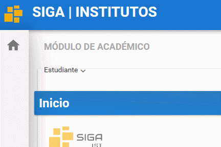
-
Se reflejará sus datos, Horario de Clases, Asignaturas y Notas.

Actualizar Ficha personal Estudiante
Presione Click Aquí para ver Video Demostrativo.
Colocar su usuario y contraseña presione en el botón ingresar.

Luego de haber ingresado diríjase a la esquina superior izquierda a la sección módulos presione click y presione click en el módulo "Académico".

Una vez que haya ingresado en el módulo Académico, en el menu "Estudiante" , dar click en el submenu ¨Ficha Personal¨. Se abrirá la Ficha Personal en caso de ser nuevo los campos vendrán sin llenar y en caso de estudiantes que se han matriculado en semestres anteriores mediante el SIGA vendrá con los datos pre cargados.

Datos Personales
Seleccionar una foto apropiada, con fondo blanco y que se aprecie bien el rostro. Los campos son de 3 tipos de seleccionar, de texto libre y de tipo fecha Los campos obligatorios están marcados con un asterisco de color rojo, estos no pueden dejarse en blanco debido a que obligatoriamente deben cargarse en el sistema. Hay una consideración importante en el campo "Etnia" al darle click aparecerán un conjunto de valores los cuales pueden ser seleccionados. En particular si selecciona la etnia indígena se habilitara el campo de "Pueblo/Nacionalidad" para seleccionar uno de los que estén disponibles, en el caso de no seleccionar la nacionalidad indígena y seleccionar otra etnia automáticamente se bloqueara el campo "Pueblo/Nacionalidad".

En el campo de discapacidad en el caso no poseer se deja marcado el valor podrá pasar al siguiente campo de enfermedades catastróficas, si tiene alguna discapacidad tendrá que seleccionar el valor si se habilitaran los campos: tipo de discapacidad, porcentaje de discapacidad y número de carne en caso de no contar con el carnet tendrá que seleccionar que no tiene una discapacidad y seleccionar una enfermedad catastrófica o cuando se comunique con docente con usted poderle indicar la particularidad de su caso.
Datos de contacto y Datos adicionales
Completar todos los datos. De igual manera tendrá que completar los datos, seleccionando los valores disponibles En el caso del campo Cantón de nacimiento y Cantón de residencia se tendrá que llenar presionando el icono de lupa y se abrirá una ventana emergente en la que podrá filtra por Provincia o por el Nombre del Catón, escriba la Provincia y presione la tecla tab de su teclado para pasar a llenar el campo del Cantón, evite presionar la tecla enter. En el campo de Cantón de residencia se llenara de igual manera.
El campo de ubicación geográfica se diferencia a los demás y en cual tendrá que colocar la latitud y longitud de donde vive para ello tendrá que darle click en el botón cargar información y aparecerá una ventana emergente en la cual podrá buscar su ubicación, en caso de que le aparezca un mensajes de Google en el que diga que no puede cargar correctamente los mapas simplemente tendrá que darle doble click en el botón aceptar y le permitirá seleccionar su ubicación, para poder desplazarse por el mapa tendrá que presionar la tecla Ctrl de su teclado y con el con la rueda del mouse poder acercar o alejar la vista del mapa, para seleccionar su latitud y longitud tendrá que dar click izquierdo y automáticamente se va capturar los puntos le da click en el botón aceptar y automáticamente se llenará los campos.

Termine de completar toda la información necesaria.
Datos Institucionales
En el campo "Tipo de colegio" darle click y tiene que colocar el tipo colegio que estuvo estudiando.

En ocupación existen dos opciones si el usuario: solo estudia o trabaja y estudia. En el caso de seleccionar que solo estudia en el siguiente campo tendrá que colocar que no aplica, pero en el caso de que haya seleccionado la opción que trabaja y estudia tendrá que seleccionar una de las tres opciones disponibles.

En el campo de mantiene la gratuidad viene bloqueado asi que no tiene que modificar nada, en el campo de pensión diferencias y bono de desarrollo tendrá que marcar en caso de que reciba pero en el caso de que no reciba los dejará sin marcar y tendrá que seguir completando los demás campos.
Prácticas Pre-Profesionales y Vinculación
En el campo de prácticas pre-profesionales solo se colocará información referente a las prácticas que ha hecho en el nivel superior al igual que en el campo de vinculación con la sociedad, en caso de haber realizados las prácticas pre-profesionales a nivel superior marcar la casilla y colocar el número de horas realizadas. En el campo Entorno Institucional es donde realizo las prácticas pre-profesionales y seleccionar una de las opciones, en el caso de no haber realizado las practicas tiene que seleccionar la opción de no aplica y completar los datos faltantes. Una vez que haya terminado de llenar todos los campos tiene que darle click en el botón guardar y luego darle click en el botón imprimir ficha y se va generar un archivo pdf con ciertos datos que usted registro en estas tres secciones, cabe recalcar que no aparecerán todos datos solo los mas relevantes luego tendrá que firmarla con esfero color azul y posteriormente esa ficha se utilizará para su formalización de pre-matricula.

Manual para iniciar sesión en el sistema SIGA
Presione Click Aquí para ver Video Demostrativo.
-
Ingrese a la Página del SIGA o puede ingresar mediante el siguiente link* siga.institutos.gob.ec
-
Ingrese su usuario*
-
Ingrese su contraseña y presione en el botón ingresar*

Preguntas relacionadas
¿Cuál es la dirección para ingresar al sistema SIGA?
¿Como ingresar al sistema SIGA?
¿Cuál es el link del sistema SIGA?
¿Como recuperar mi contraseña?
Interfaz de Usuario
Presione Click Aquí para ver Video Demostrativo. Una vez iniciado sesión en el sistema SIGA encontrara la siguiente interfaz.
-
En la barra superior derecha se encuentra el nombre de usuario con el que esta registrado en el sistema SIGA.

-
El ícono usuario contiene submenús de ayuda.

-
En la barra superior izquierda se encuentra un ícono amarillo que le permite recargar la página.

-
En la barra lateral izquierda está la sección módulo que contiene los menús principales que varia según el rol logeado.

-
Cada menú contiene submenus para las funcionalidades del sistema SIGA.

-
En el centro de la pantalla aparececera las funcionalidades según la opción que escoja en el menú.

Preguntas relacionadas
¿Cómo puedo cerrar sesión?
¿Dónde puedo ver los módulos que tengo ?
¿Cómo puedo regresar al inicio?
Recuperar Contraseña
-
Ingrese al sistema SIGA y seleccione la opción"¿olvidó su contraseña?"
-
Llene el formulario https://forms.gle/jxRbJ592Q1Zimzqd9
-
Una vez completo el formulario envíelo
-
Su formulario será revisado por el personal de soporte técnico
-
Le llegará un mensaje a su correo institucional, en donde encontará su usuario y contraseña.
-
Todo listo para Ingresar al sistema SIGA !
Preguntas relacionadas
¿Cuál es la dirección para ingresar al sistema SIGA?
¿Como ingresar al sistema SIGA?
¿Como cerrar sesion?
Manual Actualizar Ficha del Docente
Para actualizar sus datos personales como Docente
-
Ingrese en la sección Módulos, en la esquina superior izquierda y elija en el módulo Docentes.

-
En el menú Mi Docencia seleccione el submenú Ficha Docente.
-
Colocar una foto del docente.

-
Actualice los datos según sea necesario para colocar los datos correctos y llene cada uno de los campos.

-
Presione el Botón Guardar.

Le aparecerá un mensaje de Guardado Exitoso
-
Presione el Botón Imprimir Ficha.
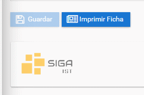
Verifique en su computador la descarga de la ficha.
Preguntas Relacionadas
¿Dónde puedo cambiar mis datos de docente?
¿Cómo cambiar mis datos de docente?
¿Qué debo poner para cambiar mis datos de docente?
¿Cómo actualizar mis datos personales como docente?
Consultar Distributivo
Presione Click Aquí para ver Video Demostrativo.
-
Nos dirijimos el módulo docentes.
-
Seleccionamos el menú "Mi Docencia", seguido del submenú "Distributivo".

-
El docente podra visualizar las asignaturas, el paralelo, el nivel, la carrera y el curso correspondiente en el que esta asignado.
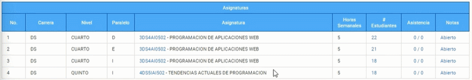
Generar reportes
Para ejecutar reportes dentro del sistema SIGA
Presione Click Aquí para ver Video Demostrativo.
-
Dirijase a la sección "Módulos" en la parte superior izquierda e ingrese al módulo "Reportes".
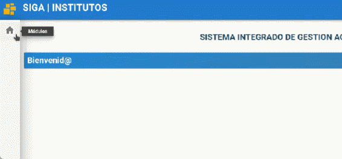
-
En el menú de reportes presione dentro del submenú "Ejecución de Reportes".

-
Presione el botón "listar valores" el cual mostrara la lista de reportes, seleccione el reporte a generar y presione el botón "seleccionar" al reporte que desea generar.
-
Cada reporte tiene sus respectivos filtros o campos de búsqueda, por ejemplo, el reporte "ficha docente" requiere ingresar el número de cédula. Ingrese el número de cédula del docente a continuación

-
Seleccione el tipo de archivo que desee descargar como PDF o XLS y presione el botón "Ejecutar".
-
A continuación, se le descargara el reporte que generó.

Otro ejemplo si desea generar otro reporte como "DISTRIBUTIVO POR DOCENTE" tiene un campo de búsqueda diferente en este caso son el Periodo electivo y la cédula.
-
Seleccione el periodo que usted desea con el botón lista de valores o inserte el código del periodo electivo
-
Ingrese el número de cédula y el tipo de archivo en que desee descargar como PDF o XLS y presione "Ejecutar"

Generar MATRIZ DE SEGUNDAS Y TERCERAS
-
Seleccione el periodo que usted desea con el botón lista de valores o inserte el código del periodo electivo

-
Ingrese el código de la carrera y el tipo de archivo que desee descargar como PDF o XLS, y presione "Ejecutar"

Preguntas relacionadas
¿Como descargo el reporte?
¿Donde imprimo el reporte?
Crear asistencia
Para crear asistencia dentro del sistema SIGA.
-
Diríjase al apartado superior derecha y seleccione su perfil y en el submenú e ingrese a "Cambio de Instituto".
-
En perfil, seleccione "Líder SIGA" y presione "Aceptar".
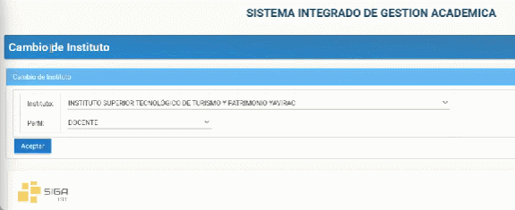
-
Diríjase a la sección "Módulos" en la parte superior izquierda e ingrese al módulo "Matricula".
-
Nos dirigimos a menú "Matricula" submenú "Maestro de Asistencias".
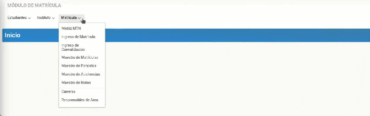
-
Automáticamente se van generando las asistencias conforme las configuraciones de los horarios y calendarios, sin embargo, también podemos generar o filtrar por carrera.
-
Por ejemplo vamos a generar los de CUARTO y a continuación presionar botón "Generar".
-
Se mostrará en pantalla un cuadro, seleccione la fecha y presione "Aceptar" y aparece la materia programación de aplicaciones web del docente correspondiente, del turno vespertino de esta manera se genera la asistencia a partir de aquí adelante todos los días se generaría asistencia de forma automática para las asignaturas que tengan configurado, el horario y calendario.
Preguntas relacionadas
¿Es necesario un rol?
¿Se genera automáticamente mi asistencia después de la generada?
¿Como genero una asistencia para una asignatura específica?
Manual cambio de perfil en la plataforma SIGA
Presione Click Aquí para ver Video Demostrativo.
-
Ingrese a la plataforma SIGA.
-
Diríjase a la esquina superior derecha de la pantalla, presione click sobre su nombre e ingrese la opción de "Cambio de Instituto"
-
Ubiqur el campus perfil, seleccione el perfil deseado y finalmente presione el boton "Aceptar" y ya ha cambiado el perfil.
Preguntas relacionadas
¿Cómo cambio el perfil de usuario?*
¿Cuándo tengo que cambiar mi perfil de usuario?
¿Cuántos perfiles de usuarios puedo tener?
Modificar Paralelo en el sistema SIGA
Para actualizar un paralelo realize lo siguientes pasos
-
Seleccione la asignatura en la que desea actualizar el paralelo, presione el botón modificar.
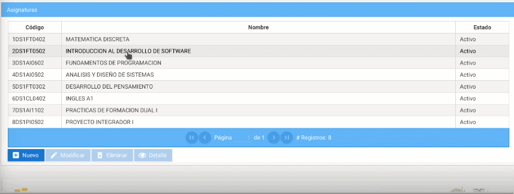
-
En el apartado nombre coloque el paralelo asignado , seleccione la jornada correspondiente.

-
Una vez completado el proceso presione el botón guardar.
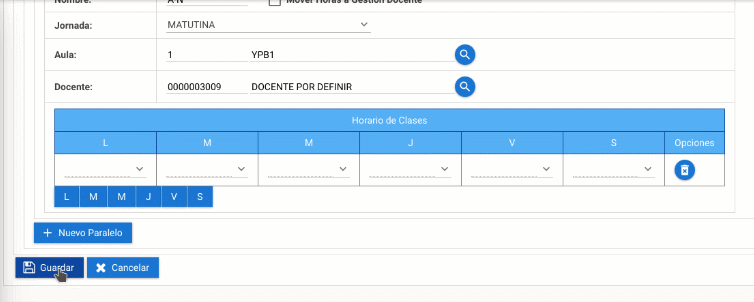
Registro de asistencia en el sistema SIGA
Presione Click Aquí para ver Video Demostrativo Una vez que inicio sesión en el sistema SIGA.
-
Dirijase a la sección módulo y seleccione el menú docente.

-
Seleccione el submenú "Mi Docencia" seguido del apartado Distributivo.

-
Elija la fecha de registro, presione el botón registro de asistencia.

-
Coloque el tema y la observación del motivo para generar el registro de asistencia.

-
Seleccione las horas que estuvo ausente el estudiante.

-
Seleccione la causa por la que no estuvo el estudiante.
-
Una vez completado el proceso, haga click que el botón aceptar.

Registro de notas
Realizamos los siguientes pasos.
-
Selecciones el submenú solicitudes.
-
Haga click en el botón nuevo.

-
Elija el tipo de solicitud.

-
Seleccione la fecha que desea generar el registro, seguido del paralelo. 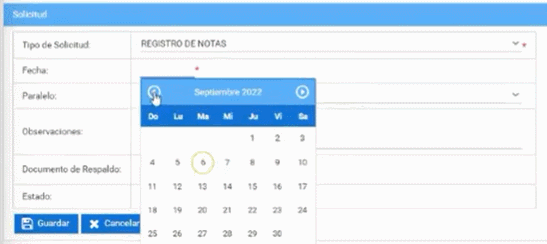
-
Presione el botón guardar.
Tipo de Materias
-
Diríjase al apartado superior derecha y seleccione su perfil y en el submenú e ingrese a "Cambio de Instituto".

-
En perfil, seleccione "Docente" y presione "Aceptar".
-
Diríjase a la sección "Módulos" en la parte superior izquierda e ingrese al módulo "Matricula" a continuación nos dirigimos a menú "Parámetros" submenú "Tipos de Materia".
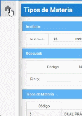 -
Observara el nombre del Instituto y los tipos de materia.

-
Seleccione un tipo de materia donde se le dará la opción de "Modificar" y "Ver".
- En la opción "Modificar" podrá editar el Tipo de Materia que selecciono. Los campos con (*) son obligatorios.
- En la opción "Ver" podrá visualizar el estado que se encuentra el Tipo de materia que selecciono.
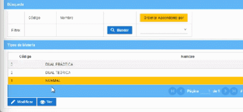
Preguntas relacionadas
¿Cómo visualizo un Tipo de Materia?
¿Cómo módifico correctamente un Tipo de Materia?
Crear período académico
Crear períodos académicos en la plataforma SIGA es muy facil.
Realice los siguientes pasos.
-
Ingrese a la plataforma con el perfil "Lider-Siga".

-
En la sección de "Periodos" presione click en el botón "Nuevo".
-
Seleccione el Código y Nombre.
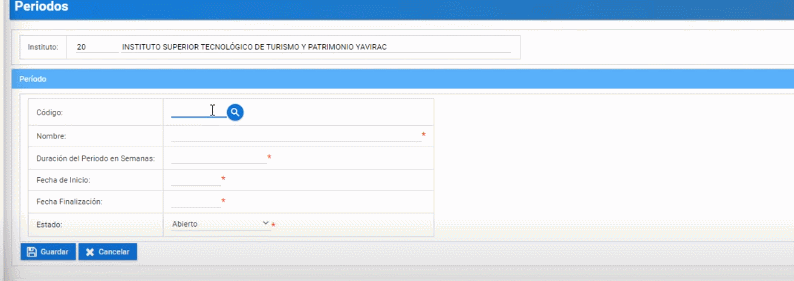 -
Ingrese la "Duración del Período de Semanas"

-
Seleccione la "Fecha de Inicio".
-
Seleccione la "Fecha de Finalización". 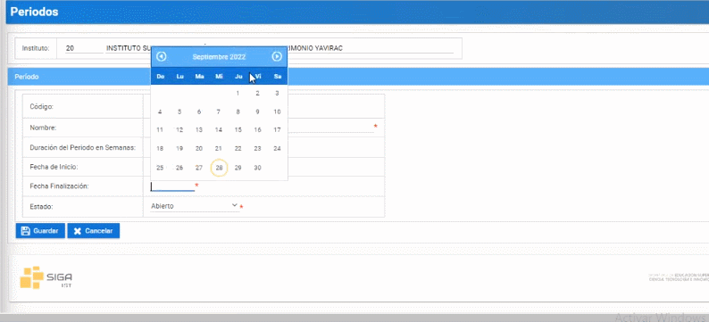
-
Seleccione "Estado".

-
Finalmente presione el boton "Guardar"
Modificar periodo académico
Modificar periodos académicos en la plataforma SIGA es muy facil.
Realice los siguientes pasos.
- Ingrese a la plataforma con el perfil "Lider-Siga".

- En la sección de "Periodos" seleccione el periodo a modificar y presione el botón "Modificar" (solo para periodos con "estado abierto").
- Ingrese la "Duración del Periodo de Semanas"
- Seleccione la "Fecha de Inicio".

- Seleccione la "Fecha de Finalización".

- Seleccione "Estado". 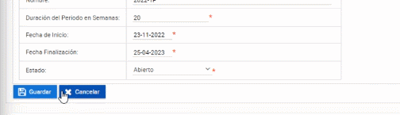
- Finalmente presione el boton "Guardar"

Visualizar período académico
Visualizar períodos académicos en la plataforma SIGA es muy facil.
Realice los siguientes pasos.
- Ingrese a la plataforma con el perfil "Lider-Siga".
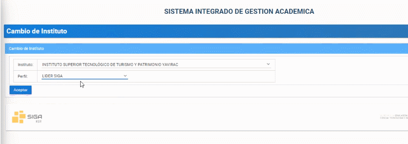 - En la sección de "Períodos" seleccione el período a visualizar y presione el botón "Visualizar" ("No podrá realizar cambios").
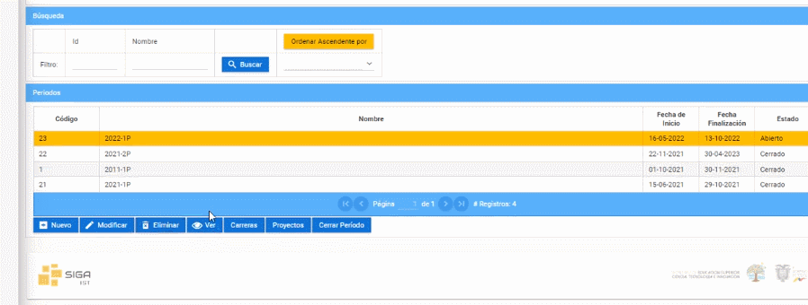
Eliminar período académico
Eliminar períodos académicos en la plataforma SIGA es muy facil.
Realice los siguientes pasos.
- Ingrese a la plataforma con el perfil "Lider-Siga".

- En la sección de "Períodos" seleccione el período a eliminar y presione el botón "Eliminar"
Cerrar periodo académico
Cerrar períodos académicos en la plataforma SIGA es muy facil.
Realice los siguientes pasos.
- Ingrese a la plataforma con el perfil "Lider-Siga".

- En la sección de "Periodos" seleccione el período a cerrar y presione el botón "Cerrar".
De esa manera podra cerrar un período académico en la plataforma SIGA.
Ver la carreras en período académico
Observar la carrera en períodos académicos en la plataforma SIGA es muy facil.
Realice los siguientes pasos.
- Ingrese a la plataforma con el perfil "Lider-Siga".

- En la sección de "Períodos" seleccione el periodo donde quiere ver las carreras que desée saber y presione el botón "Carreras".
- Finalmente podrá visualizar las carreras que tiene por período académico.
Manual para Cambiar o actualizar código de Asignaturas.
Presione Click Aquí para ver Video Demostrativo.
-
Nos dirigimos hacia el módulo matricula, menú instituto y submenú carreras

-
Seleccionar la carrera y dar clic en el botón "Niveles Académicos" 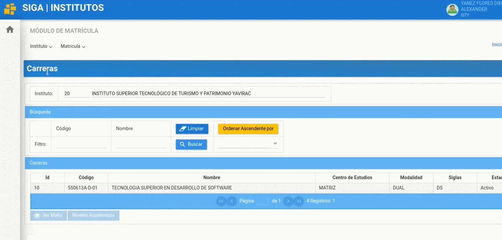
-
Seleccionar el nivel para luego presionar el botón "Asignaturas"

-
Seleccionar la asignatura que desea cambiar o actualizar el Código (en este ejemplo seleccionaremos "Proyecto Integrador" con el Código "N/A" esto quiere decir que no se le ha asignado aun un Código)
- Luego seleccionamos el botón "Modificar"

- Nos dirigimos hacia la parte superior, al campo Código y debe colocar el Código correcto según la distribución y para finalizar en la parte inferior le da al botón "Guardar"
¡Listo ha completado el cambiar o actualizar de Código a una asignatura ¡
Manual para crear asignaturas
-
Para poder crear asignaturas solo lo pueden hacer los coordinadores de carrera y debe colocarse en el perfil de líder siga
-
Nos dirigimos al modulo matricula luego al menú instituto y elegimos carreras
-
Nos dirigimos hacia la carrera que deseamos crear una asignatura (En este ejemplo seleccionamos Desarrollo de Software) y damos clic en el botón “Niveles Académicos”

-
Seleccionamos la asignatura y clickamos en el botón "Nuevo".
 Y nos mostrará una serie de opciones que podemos generar en la asignatura.
Y nos mostrará una serie de opciones que podemos generar en la asignatura.

Opciones de generación de asignatura
En el apartado codigo coloque el nuevo código de la asignatura. En el apartado “Nombre” colocaremos el nombre de la asignatura que deseamos generar.

Tipo de Actividad: puede elegir si es, normal(Pertenece a la malla), proyecto integrador, practicas preprofesionales, inglés o titulación.

Unidad de Organización Curricular: elegiremos su es unidad básica, unidad profesional, unidad de titulación, complementarias o dualidad .

Área: Podrá escoger el área que se desempeñe la asignatura.
Eje de Formación: en esta opción podrá elegir entre: fundamentos teóricos, adaptación e innovación tecnológica, comunicación y lenguajes, integración de saberes, contextos y cultura y no definido.

Tipo de Materia: Podremos escoger si la asignatura será, Normal, Dual teórica o Dual practica

En las siguientes opciones tenemos: Horas Semanales Horas Docencia, Horas Practica, Horas Autónoma, % Nota del Nivel ( elegiremos el peso que tendrá la nota de la materia creada o modificada frente al proyecto integrador en caso de tener), estado puede ser activo o inactivo.

-
Una vez hayamos llenado las opciones según el tipo de materia generada, podremos elegir si la materia tendrá “PRE-REQUISITOS” Y/O “CO Requisitos”

-
Una vez finalizado el proceso damos clic al botón “Guardar” y listo ha completado el proceso de generar una asignatura.

Manual para crear asignaturas
-
Para poder crear asignaturas coloquese en el perfil de líder siga

-
Nos dirigimos al modulo matricula luego al menú instituto y elegimos carreras

-
Nos dirigimos hacia la carrera que deseamos crear una asignatura (En este ejemplo seleccionamos Desarrollo de Software) y damos clic en el botón “Niveles Académicos”

-
Seleccionamos el nivel que deseemos ver las asignaturas y escogemos el nivel y damos clic al botón “Asignaturas”

-
Seleccionamos la asignatura que deseamos modificar.
 Y nos mostrara una serie de opciones que podemos modificar en la asignatura.
Y nos mostrara una serie de opciones que podemos modificar en la asignatura.
Opciones de modificación o creación de asignatura
En el apartado codigo coloque el nuevo código de la asignatura. En el apartado “Nombre” colocaremos el nombre de la asignatura que deseamos modificar.

Tipo de Actividad: puede elegir si es, normal(Pertenece a la malla), proyecto integrador, practicas preprofesionales, inglés o titulación

Unidad de Organización Curricular: elegiremos su es unidad básica, unidad profesional, unidad de titulación, complementarias o dualidad

Área: Podrá escoger el área que se desempeñe la asignatura

Eje de Formación: en esta opción podrá elegir entre: fundamentos teóricos, adaptación e innovación tecnológica, comunicación y lenguajes, integración de saberes, contextos y cultura y no definido.

Tipo de Materia: Podremos escoger si la asignatura será, Normal, Dual teórica o Dual practica

En las siguientes opciones tenemos: Horas Semanales Horas Docencia, Horas Practica, Horas Autónoma, % Nota del Nivel ( elegiremos el peso que tendrá la nota de la materia creada o modificada frente al proyecto integrador en caso de tener), estado puede ser activo o inactivo.
Una vez hayamos llenado las opciones según el tipo de materia creada o modificada, podremos elegir si la materia tendrá “PRE-REQUISITOS” Y/O “CO Requisitos”

Una vez finalizado el proceso damos clic al botón “Guardar” y listo ha completado el proceso de crear una nueva asignatura o modificar una asignatura.
Eliminar asignatura
Paralelos del Docente
- Cambiamos el rol a LIDER SIGA.

- Seleccionamos el módulo matrícula.

- En el menú matrícula seleccionamos el submenú "Maestro de Paralelos".
- Podrá vizualizar todos los paralelos en el que está asignado.

- Podrá observar los paralelos eligiendo la carrera correspondiente.
- También lo puede hacer eligiendo el nivel que está cursando.
Modificar Paralelos del Docente
Para modificar el Paralelo del Docente haremos lo siguiente:
- Elegimos la asignatura y presionamos botón modificar.
- Podrá cambiar el docente tutor.
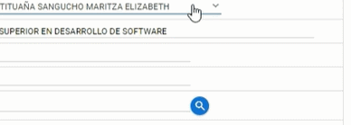
- Podrá cambiar al docente asignado al paralelo.
- La aula asignadad también puede cambiarla.
- El estado lo cambiara cuándo el periodo este finalizando.
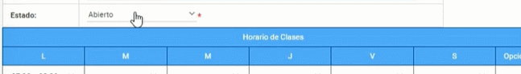
- El horario de clases también lo puede modificar según las horas que necesite.
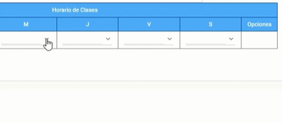
- Realizando todos los pasos presionamos el botón guradar.

Consulta de Notas
Presione Click Aquí para ver Video Demostrativo
Para consultar las notas en el sistema. Realice los siguientes pasos.
- Dirijase a la parte superior izquierda y seleccione el módulo Docentes.

- Seleccione el menú Mi Docencia y elija el submenú Distrivutivo.

- En la parte inferior podrá visualizar la materia y la nota respectiva de cada estudiante.
¿Dónde puedo ver mis notas? ¿Cómo puedo ver mis notas?
Pasar Notas
Para poder ingresar las notas.
Realice los siguites pasos.
Presione Click Aquí para ver Video Demostrativo
- Dirijase a la parte superior izquierda y seleccione el módulo Docentes.

- Seleccione el menú Mi Docencia y elija el submenú Distrivutivo.

- En la parte inferior podrá visualizar la materia y elegir en la parte de la derecha el apartado Notas. 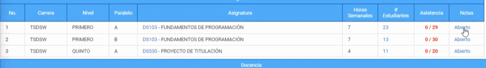
- Verificar el esquema de calificaciones y subir las notas de cada estudiante.
- Dirijase a la parte inferior derecha y seleccione el Botón Guardar.
¿Cómo pasar las notas? ¿Dónde puedo pasar las notas?
Generar reportes
Para ejecutar reportes dentro del sistema SIGA
Presione Click Aquí para ver Video Demostrativo.
-
Dirijase a la sección "Módulos" en la parte superior izquierda e ingrese al módulo "Reportes".
-
En el menú de reportes presione dentro del submenú "Ejecución de Reportes".
-
Presione el botón "listar valores" el cual mostrara la lista de reportes, seleccione el reporte a generar y presione el botón "seleccionar" al reporte que desea generar.
-
Cada reporte tiene sus respectivos filtros o campos de búsqueda, por ejemplo, el reporte "ficha docente" requiere ingresar el número de cédula. Ingrese el número de cédula del docente a continuación
-
Seleccione el tipo de archivo que desee descargar como PDF o XLS y presione el botón "Ejecutar".
-
A continuación, se le descargara el reporte que generó.
Otro ejemplo si desea generar otro reporte como "DISTRIBUTIVO POR DOCENTE" tiene un campo de búsqueda diferente en este caso son el Periodo electivo y la cédula.
-
Seleccione el periodo que usted desea con el botón lista de valores o inserte el código del periodo electivo
-
Ingrese el número de cédula y el tipo de archivo en que desee descargar como PDF o XLS y presione "Ejecutar"
Generar MATRIZ DE SEGUNDAS Y TERCERAS
-
Seleccione el periodo que usted desea con el botón lista de valores o inserte el código del periodo electivo
-
Ingrese el código de la carrera y el tipo de archivo que desee descargar como PDF o XLS, y presione "Ejecutar"
Preguntas relacionadas
¿Como descargo el reporte?
¿Donde imprimo el reporte?
Manual Revisión Pre Matricula Plataforma SIGA
- 1.- Ingrese a la plataforma SIGA.

- 2.- Dirijase a la esquina superior derecha de la pantalla, presione click sobre su nombre e ingrese en la opción de "Cambio de Instituto" luego Presionar en Docente y cambiar a revisor.
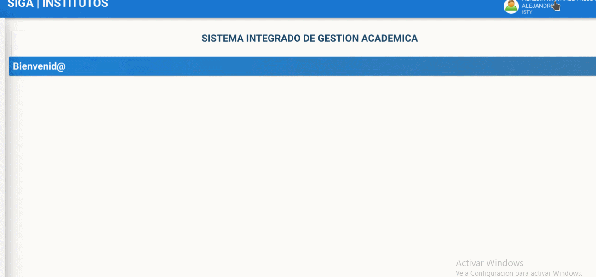
- 3.- Dirijase al modulo, presione matricula y luego Maestro de Matriculas.
- 4.- Al ingresar le apareceran las solicitudes matriculas de los estudiantes que están en las carreras, podra filtrar las solicitudes de matriculas por el número de cedula, para que lo haga ingrese los primeros digitos de la cedula y le saldrá las matriculas que se asocien con los digitos puestos, recuerde que tambien puede buscar por los nombres del estudiante.
- 5.- Seleccione la solicitid de matricula que busco y de presione encima de la fila del estudiante, al presionar le dará las opciones de "Modificar" "Asignatura" y "Validar"
- 6.- Presione en asignaturas y podra revisar en las cuales esta matriculado el estudiante, tambien podrá revisar jornada y nombres del estudiante.

- 7.- Revise las asignaturas, en caso de que la asignatura no sea correspondiente a la carrera del estudiante presionar el boton eliminar y en caso que falten asignaturas presione en nuevo y le aparecera una ventana en el cual agregara la asignatura faltante presionando la lupa que le aparece, busque la asignatura escribiendo el nombre, le aparecera la asignatura buscada y NO PRECIONE la tecla enteR, y si presione la tecla TABULAR para que se agregue, finalmente de click en aceptar, dirijase al panel del centro en el cual podrá cambiar de paralelo, para que los cambios realizados presionamos el botón guardar

- 8.- Para regresar nos dirijimos al lado superior derecho y regresamos a consulta de matriculas.
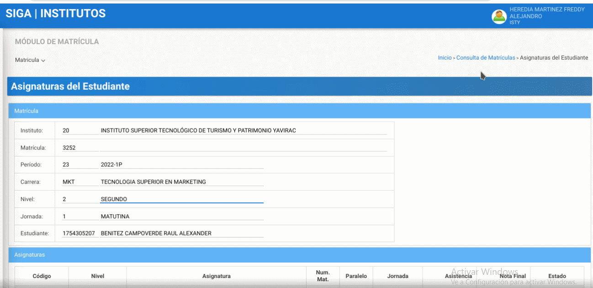
- 9.- Una vez que las asignaturas y paralelo sea correctas se debera revisar la información subida por el estudiante que es el certificado de no adeudar o el comprabante de pago si tenía pagos pendientes, ficha personal o acta de grado. Empiece revisando la planilla de la ficha personal, tendra que verificar los datos del estudiante, datos institucionales, foto del estudiante la ficha debera estar firmada con esfero azul y escaneada. Finalmente el certificado de no adeudar.


- 10.- Regresamos a consulta de matricula y si esta todo en orden presionamos en validar y observara un visto indicando que la solicitud de matricula fue validada
- 11.- Si se cometió un error, borre el filtro de la cedula y presione en buscar revisaremos la unica solicitud de matricula valida, presione en modificar despues dirijase al panel en donde dice valido, quite el visto presione en guardar. Y se observara que la pre matricula en el estado inicial.

Manual para actualizar la contraseña de otros usuarios
Presione Click Aquí para ver Video Demostrativo.
-
Para actualizar la contraseña de otros usuarios dirigase al modulo administracion
-
En el menu administracion ingrese en el submenu resetear clave.
-
Digite la cedula de la persona que desea reiniciar la contraseña.
 Luego presione la tecla "Tabulacion"
Luego presione la tecla "Tabulacion"

-
En el campo nueva clave borre la cedula y digite la nueva contraseña.
Luego de haber digitado la nueva clave, damos click en el boton regenerar clave. Y listo ha completado el cambiar de clave satisfactoriamente.
Estudiantes ITS
Presione Click Aquí para ver Video Demostrativo Una vez iniciado sesión en el sistema SIGA
-
Diríjase al menú y seleccione el módulo de matrícula.

-
Dentro del módulo de matrícula encontrara diferentes interfaces. Seleccione la interfaz Estudiantes ITS.

-
Seleccione el periodo del estudiante a consultar.

-
En búsqueda complete los campos solicitados (identificación, nombre o apellido), Y de clic en buscar. Gif07
-
También puede realizar su consulta por carrera y estado, al final del listado encontrara una barra que ayudara en su busqueda.

-
En lado superior derecho de búsqueda encontrará un botón amarillo el cual le permitirá ordenar la información obtenida a su preferencia.

Configurar Horarios
Configurar horarios sirve para que se puedan generar las asistencias y el ingreso de notas para la materia que se requiera.
Presione Click Aquí para ver Video Demostrativo.
Para ello realizaremos los siguientes pasos.
- Diríjase al menú de módulos y dar click en el Módulo "Matrícula".
- Luego presione click en el menú "Instituto", después dar click en sub menú "Periodos".

- Seleccione el periodo que desea modificar, a continuación presione el botón "Carreras".

- Seleccione la carrera que desea modificar y luego presione el botón "Niveles Académicos".

- Seleccione el nivel académico en el que se encuentra la asignatura que desea configurar y presione el botón "Asignaturas".

- Selecciones la asingatura a configurar, posteriormente presione el botón "Modificar".

- Se podrá visualizar un calendario y los paralelos de la asignatura seleccionada, confirme que seleccionó la opción correcta.

- Ubíquese en el paralelo que usted desea configurar y en la tabla "Horario de clases" puede realizar la configuracion por dias y horas que necesite modificar.

- Para que aparezca un nuevo menú presiona el botón de la sigla del día de la semana y seleeciona el horario que necesite.

- Realice los mismo pasos para todos los dias de la semana.
- Luego de terminar de configurar los horarios presione el botón "Guardar" y aparecerá un mensaje diciendo "Proceso realizado con éxito".
Configurar Calendarios
Configurar calendarios sirve para que se puedan generar las asistencias y el ingreso de notas para la materia que se requiera.
Presione Click Aquí para ver Video Demostrativo.
A continuación realice los siguientes pasos para configurar el calendario.
-
Ubíquese en el Calendario y desplácese a la "Fecha de Inicio" según necesite.

-
Presione click en el día que necesite configurar. Se desplegará una ventana y seleccione el "Tipo de Hito" según necesite.
-
Relice los mimos pasos para la "Fecha Final".
-
Por último presione el botón "Gurdar".

Crear Personal Administrativo
- Cambiamos el rol a LIDER SIGA.

- Seleccionamos el módulo matrícula.
- En el menú instituto seleccionamos el submenú "Personal Administrativo".

- Presionamosel botón nuevo.

- Esciba el tipo de documento y la identificación.

- Escriba sus nombres y apellidos.

- Escriba su correo electrónico, teléfono celular.

- Elija el cargo asignado.
- Ingrese la fecha de entrada y de salida.
- Selecione el estado.

- Presione el botón guardar.

Modificar Personal Administrativo
Para modificar el Personal Administrativo haremos lo siguiente:
- Seleccionamos el Personal Administrativo y hacemos click en le botón modificar.

- Actualizara los campos que crea necesarios.

- Haga click en el botón guardar.
Eliminar Personal Administrativo
Para eliminar el Personal Administrativo haremos lo siguiente:
- Seleccionamos el Personal Administrativo y hacemos click en le botón eliminar.

- Aparecera un mensaje de comfirmación.

{kind=link}
Unidades administrativas
-
Diríjase al apartado superior derecha y seleccione su perfil y en el submenú e ingrese a "Cambio de Instituto".

-
En perfil, seleccione "Líder SIGA" y presione "Aceptar".

-
Diríjase a la sección "Módulos" en la parte superior izquierda e ingrese al módulo "Matriculas".
-
Nos dirigimos a menú "Institutos" submenú "Unidades administrativas".
-
A continuación tenemos una unidad administrativa.

-
Si se desea crear más presione el botón "Nuevo". Ingresa un código de la unidad administrativa con nombre, coordinador o coordinadora en que se puede buscar por cedula o por nombre y presionar el botón listar valores y el estado, finalmente presione el botón "Guardar" de esa manera podrá crear una unidad administrativa.
-
En el caso que desee modificar presione la unidad correspondiente presione el botón "Modificar" y puede cambiar el código, nombre, coordinador o coordinadora y el estado, finalmente presione el botón "Guardar" de esa manera guardara los cambios que modifico.
-
Preguntas relacionadas
¿Es necesario un coordinador al crear una unidad administrativa ??
¿Es posible modificar los datos de una unidad administrativa?
Generar reportes
Para ejecutar reportes dentro del sistema SIGA
Presione Click Aquí para ver Video Demostrativo.
-
Dirijase a la sección "Módulos" en la parte superior izquierda e ingrese al módulo "Reportes".
-
En el menú de reportes presione dentro del submenú "Ejecución de Reportes".
-
Presione el botón "listar valores" el cual mostrara la lista de reportes, seleccione el reporte a generar y presione el botón "seleccionar" al reporte que desea generar.
-
Cada reporte tiene sus respectivos filtros o campos de búsqueda, por ejemplo, el reporte "ficha docente" requiere ingresar el número de cédula. Ingrese el número de cédula del docente a continuación
-
Seleccione el tipo de archivo que desee descargar como PDF o XLS y presione el botón "Ejecutar".
-
A continuación, se le descargara el reporte que generó.
Otro ejemplo si desea generar otro reporte como "DISTRIBUTIVO POR DOCENTE" tiene un campo de búsqueda diferente en este caso son el Periodo electivo y la cédula.
-
Seleccione el periodo que usted desea con el botón lista de valores o inserte el código del periodo electivo
-
Ingrese el número de cédula y el tipo de archivo en que desee descargar como PDF o XLS y presione "Ejecutar"
Generar MATRIZ DE SEGUNDAS Y TERCERAS
-
Seleccione el periodo que usted desea con el botón lista de valores o inserte el código del periodo electivo
-
Ingrese el código de la carrera y el tipo de archivo que desee descargar como PDF o XLS, y presione "Ejecutar"
Preguntas relacionadas
¿Como descargo el reporte?
¿Donde imprimo el reporte?
Dashboard
Presione Click Aquí para ver Video Demostrativo
- Dirijase a la parte superior izquierda y seleccione el módulo Reportes.

- Seleccione el submenú Dashboard y elija Dashboard.

| Debe seleccionar el tipo de Dashboard que desee visualizar.
- Elegir Analisis de Genero.
- Elegir Docente.
- Elegir General.
- Elegir Indicadores.
- Elegir Instituto.
- Elegir Matrícula.
- Elegir seguimiento de matrícula.
Preguntas Relacionadas
¿Cómo ver reportes? ¿En dónde entro para ver mis reportes?
Registro de Docentes
Registrar docentes en el sistema SIGA es un proceso muy fácil, realice estos sencillos pasos.
Presione Click Aquí para ver Video Demostrativo.
Para realizar los siguientes pasos deber ingresar con el perfil de "Lider SIGA".
-
Diríjase al menú de módulos y dar click en el Módulo Docente.
-
Dentro del Módulo Docente, dé click en el submenú Docente.
-
Aparecerá un listado de todos los docentes creados en el sistema SIGA.
-
Desplácese hasta el final de la pantalla y presione en el botón "Nuevo"

-
Llene el formulario con los datos que se solicita (Los campos marcados con asterisco son obligatorios).

-
Para subir su foto al formulario presione un click en el botón "Cargar Foto" posteriormente dé click en botón "Seleccionar". Aparecerá una ventana donde podra buscar su foto y seleccionarla, finalmente pulse el botón aceptar para subir la imagen.

-
En el campo "Tipo de Documento" puede seleccionar entre Cédula y Pasaporte, luego ingrese el número de documento de la misma.

-
En el siguiente campo ingrese sus "Nombres" y "Apellidos" según el orden que se le indica.

-
A continuación elija su "Sexo" y "Género".
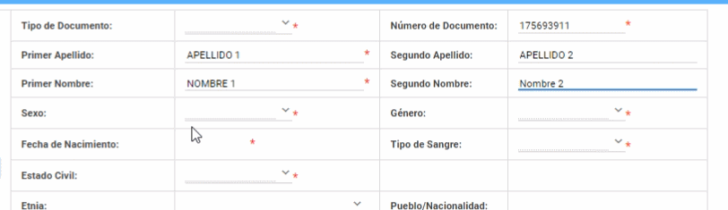 -
Al dar click en el siguiente campo "Fecha de Nacimiento" se desplegará un mini calendario donde podrá buscar su fecha de nacimiento.

-
Después seleccione su "Tipo de Sangre".

-
Seleccione su "Estado Civil".
-
A continuación seleccione su "Etnia" y "Pueblo/Nacionalidad" (Dependiendo de la etnia seleccionada tendrá mas opciones para el campo "Pueblo/Nacionalidad").

-
En el campo "Tiene Discapacidad" seleccione la opción Si o NO, en el caso de tener alguna discapcidad podrá describir el tipo de la misma.

-
Posteriormente digite su "Porcentaje de Discapacidad" y "Número de Carnet".

-
A continuación seleccione el "Tipo de Enfermedad Catastrófica".
-
Ahora llene el formulario Datos de Contacto.
-
Elija su "País de nacimiento" y "País de Nacionalidad".

-
En el campo "Cantón de Nacimiento" presione click en el botón con el simbolo de una lupa (listar valores), luego se desplegará una ventana donde puede buscar la provincia y el cantón. Posteroirmente al seleccionar la provincia y cantón se llenará automaricamente el campo"Provincia de Nacimiento".

-
A continuación seleccione el "País de Residencia" y "Provincia de Sufragio".

-
Seleccione el "Cantón de Residencia" después automáticamente se llenará el campo "Provincia de Residencia.
-
Llene los siguientes campos "Calle Principal, Secuandaria" y "Número de Casa y Código Postal".
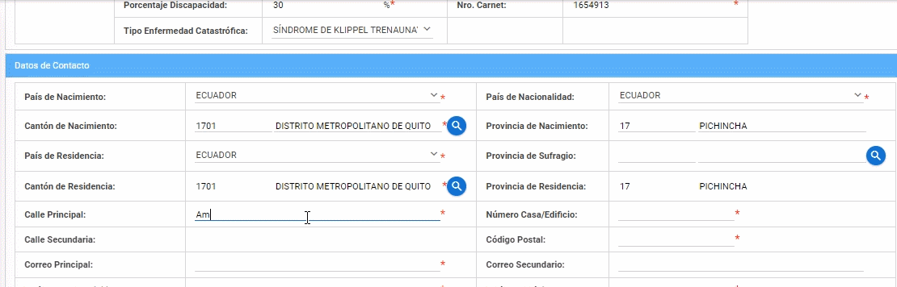 -
Luego escriba los siguientes datos de contacto que se le solicita.

-
Ahora llene los Datos Institucionales.
-
En el campo "Ingreso por Concurso de Méritos y Oposción" seleccione la opción SI o NO, según corresponda.

-
En el siguiente campo "Fecha de Ingreso a la Institución" seleccione la fecha mediante el mini calendario.

-
Igualmente en el campo "Fecha de Salida de la Institución" seleccione la fecha mediante el mini calendario.
-
A continuación en el campo "Relación laboral" seleccione una de las opciones que se desplega en el campo.

-
Luego seleccione el "Tiempo de Dedicación".
-
Después seleccione el "Tipo de Nivel de Formación".

-
Posteriormente escriba su "Título".
-
En el campo "Tipo de Escalafón" selecione una las opciones que le da el campo.
-
Ahora en el campo "Cargo Directivo del Docente" selecione una de las opciones que le da el campo.

-
Luego en el campo "Grado Ocupacional" seleccione una de las opciones que le da el campo.
-
Escriba su "Salario Mensual".
-
Después en el campo "Está en Período Sabático" selecione una de las opciones que le da el campo.
-
A continuación en el campo "Fecha de Inicio de Período Sabático" selecione una de las opciones que le da el campo.
-
Ahora en el campo "Estás Cursando Estudios" selecione una de las opciones que le da el campo. 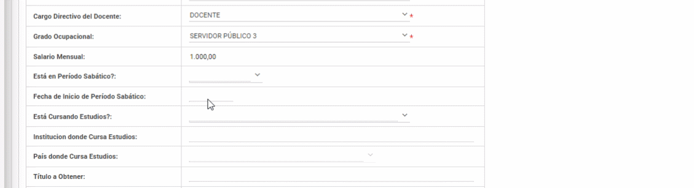
-
A continuación escriba la "Institución donde cursa estudios. 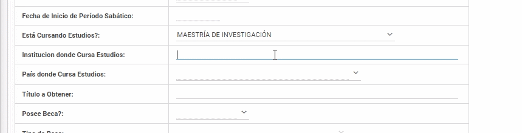
-
Después seleccione el "País Donde Cursa Estudios".

-
Escriba el "Título a Obtener".
-
En el campo "Posee Beca" seleccione la opción SI o NO.
-
En caso de haber seleccionado la opcion "SI" podrá seguir llenando los siguientes campos.

-
Finalmente para guardar los datos ingresados presione el botón "Guardar".

Preguntas Relacionadas
¿Cómo registrar un nuevo docente?
¿En qué módulo ingresar para registrar un docente?
¿Cúales son los pasos para registrar un nuevo docente?
Manual para solicitud de actualización de perfiles
solicitud de actualización de perfiles
-
Después que se crea un perfil de docente nuevo hay que permitir o solicitar el acceso para que pueda tener el perfil de docente o si la persona tiene ya el perfil de docente, pero esa persona va a ayudar con la revisión de matrículas le solicitara el perfil revisor y en el caso que sea un docente que sea coordinador de carrera se solicitara el perfil coordinador.
-
Para solicitar la actualización no se realiza ninguna actividad a nivel de “SIGA”, Tendrá que llenar una matriz como la del ejemplo
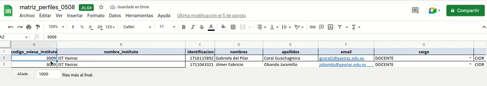
-
En la primera columna coloque el código del instituto (Código de YAVIRAC es 3009)
-
En la segunda columna coloque el nombre del instituto (En este caso IST Yavirac)
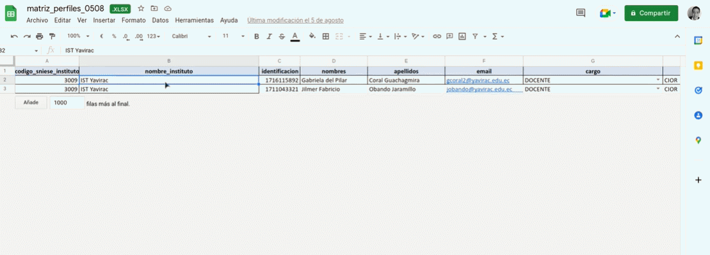
-
En la tercera columna coloque la cedula del docente
-
En la cuarta y quinta columna los dos nombres y dos apellidos
-
En la sexta columna coloque el mail institucional del docente
-
En la séptima columna hay una serie de opciones para el cargo como son: DONCENTE, RECTOR/A, COORDINADOR CARRERA, VICERRECTOR/A, SECRETARIO/A VALIDADOR(REVISOR)
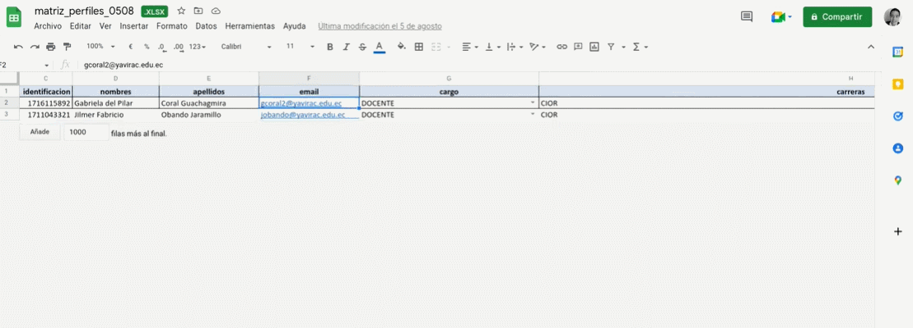
-
Y finalmente coloque el código de la carrera (tal y como esta en SIGA)
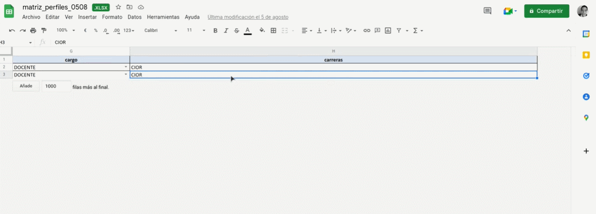
-
Para ver el código de las diferentes carreras nos dirigimos al sistema “SIGA” y diríjase al modulo matriculas luego al menú instituto submenú carreras.
- Donde podrá visualizar en el apartado “Siglas” cada una de las siglas de las diferentes carreras como por ejemplo la TECNOLOGUA SUPERIOR EN CONTROL DE INCENDIOS Y OPERACIONES DE RESCATE cuya sigla es “CIOR” o la TECNOLOGIA EN DESARROLLO DE SOFTWARE cuyas siglas es “DS”.
- En el caso de que el docente vaya a ser coordinador de carrera y vaya a tener acceso a mas de una carrera se debe colocar una “coma” y colocar la sigla de la otra carrera (Las siglas de las carreras van separadas por una “coma”)
- En el caso que dentro de la matriz no haya el cargo líder siga y desee que la solicitud del docente sea para el perfil Líder SIGA simplemente escriba Líder SIGA
- Para finalizar se recomienda que lleve un registro histórico de todas las matrices que vaya llenando de perfiles luego se envía un correo electrónico al soporte de senescyt solicitando que se actualicen los perfiles según la matriz que se adjunten en el correo. Una vez que el soporte de senescyt le notifique que ya esta cargada la matriz via correo electrónico, puede avisar al docente que ya puede cambiar su perfil Y de esa manera de solicita la actualización a senescyt
Preguntas Relacionadas
S ¿se pueden hacer varias solicitudes a la vez?S
Manual Añadir Entidades Publicas/Privadas
Para añadir entidades Publicas o Privadas.
-
Ingrese en la sección Módulos, en la esquina superior izquierda y elija en el módulo Académico.


-
En el Módulo de Académico elija el submenú Administración.

-
Ingrese en el submenú Entidades Públicas Privadas.
-
Se podrá revisar los datos de las empresas y las personas a las que se podrá contactar.
-
Presione el Bóton Nuevo si desea agregar una nueva empresa .
Le aparecerá un mensaje de Guardado Exitoso
-
Presione el Botón Modificar si desea actualizar los datos de la empresa.
Preguntas Relacionadas
¿Dónde puedo cambiar datos de empresas?
¿Cómo cambiar mis datos de empresa?
¿Qué debo poner para cambiar mis datos de empresa?
¿Cómo actualizar los datos empresariales?
Solicitud de Soporte
En caso de tener algún inconveniente con la plataforma,la página se encuentre en blanco y no halla una solucion o se necesite hacer alguna actualización. Realizar los siguientes pasos.
- Enviar un correo electrónico al Soporte de Siga.
- Capturar el mensaje de toda la pantalla
- Explicar el caso de uso
- En caso de tener un inconveniente con un estudiante o matrícula, enviar número de identificación e identificar que es del Instituto Yavirac.